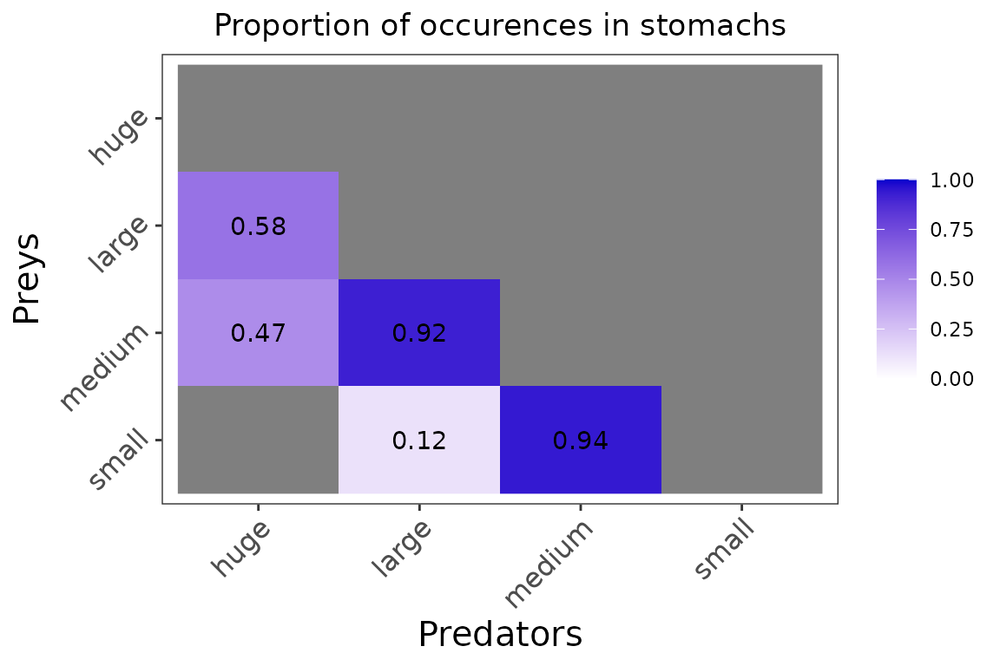
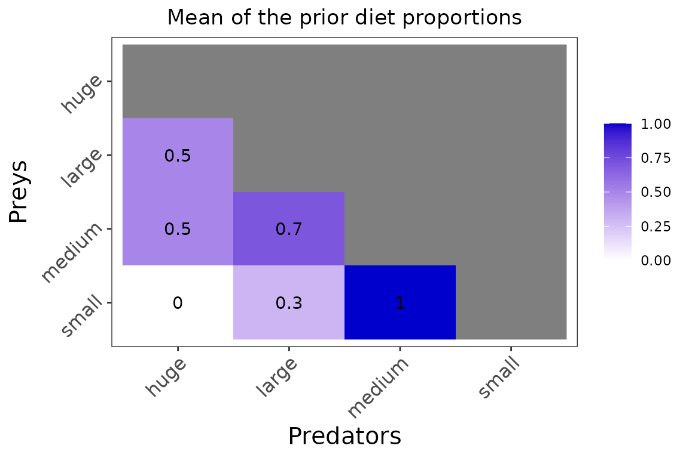
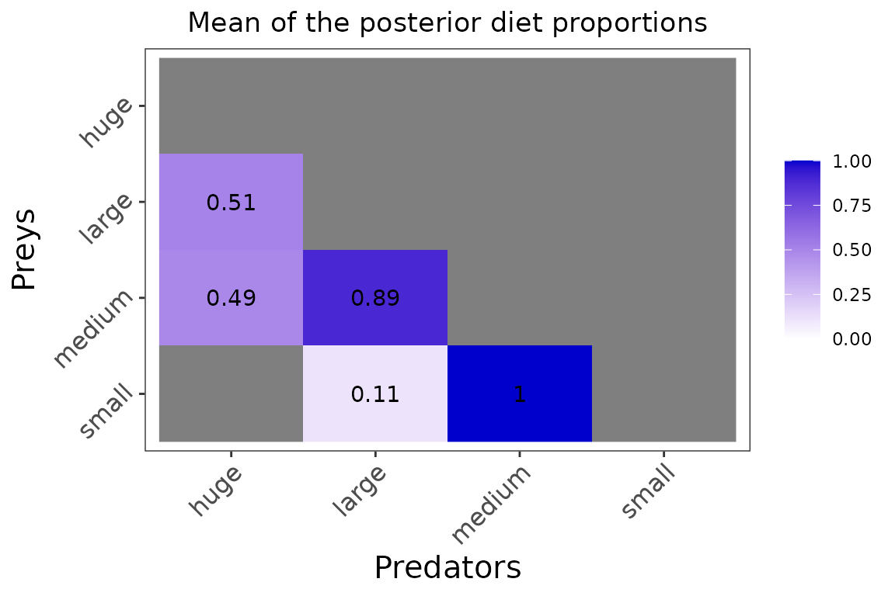

vignettes/introduction_EcoDiet.Rmd
introduction_EcoDiet.RmdEcoDiet is a new tool for assimilating data in food-web studies. The goal of the package is to quantify trophic interactions between food-web components by combining stomach content analyses and biotracers in a Bayesian hierarchical model. To do so, the model simultaneously estimates a probabilistic topology matrix of the trophic network and the diet matrix. The topology matrix is a probabilistic description of “who eats whom” in the food web and is composed of the probabilities that trophic links exist between food-web components, i.e. the probabilities \(\eta\) that any prey is eaten by a given predator. The diet matrix is estimated conditionally to this topology and contains all diet proportions \(\Pi\), hence it expresses the contribution (in %) of any prey to a given predator’s diet.
The full EcoDiet model and its application to real and simulated
datasets are described in Hernvann et al. 2022, Ecol Appl. Use
citation("EcoDiet") to get the full reference.
Several options are available within the present package:
Default option - only stomach content and biotracer data are integrated into EcoDiet.
Literature option - stomach content and biotracer data are integrated and results from expert knowledge or the literature are used to formulate informative priors on the topology and diet matrices.
The example showcased here is an artificial dataset, created to be simple to visualize and understand. In this example as in Hernvann et al. 2022, Ecol Appl the biotracers used are stable isotopes but EcoDiet could be used to treat other analyses (e.g., fatty acids, specific-compounds stable isotopes).
Before running the following code, please ensure that EcoDiet and the required tools are correctly installed and set up on your computer. Instructions can be found in the README’s instructions. If you’re all set, let’s load the EcoDiet package:
To apply EcoDiet to your own data, your stomach content, biotracer
and literature data should be in a specific format, similar to those of
following example. This data can for instance be imported into R using
.csv files:
example_stomach_data <- read.csv("./data/my_stomach_data.csv")
example_biotracer_data <- read.csv("./data/my_biotracer_data.csv")Here we will demonstrate how EcoDiet works on a simulated dataset stored within the EcoDiet package.
The stomach content table gathers the sum of occurrences of each prey trophic group in the analyzed stomachs of each consumer trophic group. The first column of the table contains the names of the prey trophic groups and the headers of the following columns contain the names of all the predator trophic groups. The last row of the table should be named “full”, and indicates how many (non-empty) stomachs have been analyzed for each trophic group.
example_stomach_data <- read.csv(system.file("extdata", "example_stomach_data.csv",
package = "EcoDiet"))
knitr::kable(example_stomach_data)| X | huge | large | medium | small |
|---|---|---|---|---|
| huge | 0 | 0 | 0 | 0 |
| large | 11 | 0 | 0 | 0 |
| medium | 9 | 22 | 0 | 0 |
| small | 0 | 3 | 16 | 0 |
| full | 19 | 24 | 17 | 0 |
In this example, for the “huge” animals, 19 stomachs were analyzed and contained remainings. Among these stomachs, 11 contained “large” animal remainings and 9 contained “medium” animal remainings.
If some trophic groups of the studied food web don’t have associated stomach content analyses, you should add a line in this table indicating the name of this group and 0 in the other rows (it is the case here for “small” animals that are at the base of the trophic network).
The Biotracer table contains the analyses of different tracer concentrations. Each line of the table represents one individual on which were conducted biotracer analyses for various elements (here, stable isotope analyses for carbon and nitrogen). The first column of the table should be called “group” and contain name of the trophic group the individual belongs. The rest of the table contains the measures, one column corresponding to one biotracer.
example_biotracer_data <- read.csv(system.file("extdata", "example_biotracer_data.csv",
package = "EcoDiet"))
knitr::kable(example_biotracer_data)| group | d13C | d15N |
|---|---|---|
| medium | -15.64284 | 13.840550 |
| medium | -15.56745 | 12.600720 |
| medium | -16.44420 | 14.037290 |
| medium | -17.16711 | 13.133810 |
| small | -17.95860 | 10.443507 |
| small | -16.56196 | 10.789742 |
| small | -17.04855 | 11.236032 |
| small | -17.14060 | 8.976896 |
| small | -16.23605 | 8.580734 |
| large | -15.24835 | 16.433410 |
| large | -14.03405 | 16.299340 |
| large | -16.76164 | 17.009600 |
| large | -16.53439 | 15.878830 |
| large | -14.93301 | 16.633490 |
| huge | NA | NA |
All the trophic groups of the studied food web should be present in this biotracer table. Thus, if biotracer analyses are missing for one given trophic group you still have to enter one line indicating the name of the trophic group and NA in the following columns (as it is the case for the “huge” group).
The biotracers like stable isotope analyses are integrated in the model based on the trophic enrichment concept. Thus, for each biotracer informed, you also need to define the corresponding trophic discrimination factors corresponding to your the biotracers. In this example, we use common trophic discrimination factors for carbon and nitrogen:
trophic_discrimination_factor = c(0.8, 3.4)If you have data extracted from the literature, skip this and go to section 3.
Read this section if you don’t want to integrate
information from the literature / expert knowledge. This is specified
using the literature_configuration argument.
literature_configuration <- FALSEThe preprocess_data function checks and rearranges the
input data into a specific format that is read when running the EcoDiet
model:
data <- preprocess_data(stomach_data = example_stomach_data,
biotracer_data = example_biotracer_data,
trophic_discrimination_factor = c(0.8, 3.4),
literature_configuration = literature_configuration
)
#> The model will investigate the following trophic links:
#> huge large medium small
#> huge 0 0 0 0
#> large 1 0 0 0
#> medium 1 1 0 0
#> small 0 1 1 0Error messages will appear if the input data hasn’t been provided in the expected shape. Please read carefully the error message and rearrange your data in the correct format.
Stomach content dataset dominated by numerous small values of
occurrence might be problematical as to few groups could be identified
as potential prey. To avoid such situations, you can choose to upscale
the stomach content data so that occurrences are artificially increased
but their relative importance are conserved. This is performed by
specifying rescale_stomach = TRUE when preprocessing the
data.
data <- preprocess_data(biotracer_data = example_biotracer_data,
trophic_discrimination_factor = c(0.8, 3.4),
literature_configuration = literature_configuration,
stomach_data = example_stomach_data,
rescale_stomach = TRUE)
#> The model will investigate the following trophic links:
#> huge large medium small
#> huge 0 0 0 0
#> large 1 0 0 0
#> medium 1 1 0 0
#> small 0 1 1 0By default, the links that will be investigated by the model will be
those derived from at least one observation in the stomach content
analyses. This is a conservative assumption to avoid investigating all
the possible trophic links in the food web, since it would make the
model too complex and require too long runs, while also reduce the
discrimination power of the model (see Hernvann et al. 2022). The
trophic links that will be investigated can be summarized by a fixed
topology computed by the preprocess_data based on stomach
contents (i.e., data$o):
topology <- 1 * (data$o > 0)
print(topology)
#> huge large medium small
#> huge 0 0 0 0
#> large 1 0 0 0
#> medium 1 1 0 0
#> small 0 1 1 0If you want to add other important link that may not be observed in scat contents (or, on the contrary, remove false positive trophic links identified in the stomach contents), you can modify directly this binary topology matrix. This operation can be useful, for instance, if your stomach sampling size is too low and you missed a prey you are definitely sure that the predator feeds on, or if you know that the identification of a prey will be reduced due to very small size or high digestibility. To specify that the “huge” animal can also eat “small” animals, you can do:
topology["small", "huge"] <- 1
print(topology)
#> huge large medium small
#> huge 0 0 0 0
#> large 1 0 0 0
#> medium 1 1 0 0
#> small 1 1 1 0To run EcoDiet on this updated binary topology, you will have to
append the previous one by re-running the preprocess_data
as follows:
data <- preprocess_data(biotracer_data = example_biotracer_data,
trophic_discrimination_factor = c(0.8, 3.4),
literature_configuration = literature_configuration,
topology = topology,
stomach_data = example_stomach_data)
#> The model will investigate the following trophic links:
#> huge large medium small
#> huge 0 0 0 0
#> large 1 0 0 0
#> medium 1 1 0 0
#> small 1 1 1 0If you don’t have data extracted from the literature, skip this and go to section 4.
Read this section if you do want to integrate
information from the literature / expert knowledge. This is specified
using the literature_configuration argument.
literature_configuration <- TRUEA literature diet table is used to set priors on the trophic link probabilities \(\eta\) and the diet proportions \(\Pi\). This table is similar to the stomach contents table, as all trophic groups must be included in the columns and rows. The numbers are the average diet proportions found in the literature. Here, the selected studies have identified that “huge” animals eat equally “large” and “medium” animals (thus the 0.5 and 0.5 numbers in the first column). The proportions for a given predator (i.e., within a given column) must sum to 1. The “small” animals are at the base of the ecosystem, so the column is filled with zeros.
The last row of the table corresponds to the literature pedigree score. This score (a number from 0 to 1) quantifies the literature reliability on each predator’s diet. Here the dietary proportions from the literature are used to produce reliable estimates for the “huge” animals, e.g., the pedigree score associated is high (0.9). On the contrary, the diet proportions for the “medium” animals come from an older article focusing on a very different ecosystem so estimates produced are less reliable, e.g, the pedigree score is low (0.2). The pedigree score for the “small” animals is set at 1, because this group eats nothing. For more details please read the reference article.
example_literature_diets_path <- system.file("extdata", "example_literature_diets.csv",
package = "EcoDiet")
example_literature_diets <- read.csv(example_literature_diets_path)
knitr::kable(example_literature_diets)| X | huge | large | medium | small |
|---|---|---|---|---|
| huge | 0.0 | 0.0 | 0.0 | 0 |
| large | 0.5 | 0.0 | 0.0 | 0 |
| medium | 0.5 | 0.7 | 0.0 | 0 |
| small | 0.0 | 0.3 | 1.0 | 0 |
| pedigree | 0.9 | 0.6 | 0.2 | 1 |
This summary of the literature data will be used to formulate:
The priors on the topology matrix’s \(\eta\)s. If a given literature diet proportion is zero, the corresponding prior Beta distribution of \(\eta\) will be shifted toward 0. If the proportion is positive, the distribution will be shifted toward 1.
The priors on the diet matrix’s \(\Pi\)s. The literature diet proportions are entered as the hyperparameters of the prior Dirichlet distribution of \(\Pi\).
The Pedigree scores are used to determine the priors’ precision. Other parameters can be used to adjust the prior distributions:
nb_literature parameter. The higher the number, the
stronger the weight will be of the literature in the final inference on
\(\eta\). Setting this parameter to 10
is like saying that the prior from the literature will weigh as much as
the additional data from 10 stomachs. Thus for any particular
application, nb_literature should be set to a value smaller
than the sample size in the available stomach content data.
nb_literature = 10literature_slope parameter (a value between 0 and
1). The higher the number, the stronger the weight will be of the
literature in the final inference on \(\Pi\). You should set this value depending
on the value of your data (number of biotracers, etc).
literature_slope = 0.5The preprocess_data function then checks and rearranges
the data in a specific format so that the EcoDiet model can be run:
data <- preprocess_data(biotracer_data = example_biotracer_data,
trophic_discrimination_factor = c(0.8, 3.4),
literature_configuration = literature_configuration,
stomach_data = example_stomach_data,
literature_diets = example_literature_diets,
nb_literature = 10,
literature_slope = 0.5)
#> The model will investigate the following trophic links:
#> huge large medium small
#> huge 0 0 0 0
#> large 1 0 0 0
#> medium 1 1 0 0
#> small 0 1 1 0If any error appears, it means your data is not in the correct format. Please read the error message and try to rearrange the data in the correct format.
If you have a lot of small values in the stomach occurrences, you can choose to upscale the stomach content data:
data <- preprocess_data(biotracer_data = example_biotracer_data,
trophic_discrimination_factor = c(0.8, 3.4),
literature_configuration = literature_configuration,
stomach_data = example_stomach_data,
rescale_stomach = TRUE,
literature_diets = example_literature_diets,
nb_literature = 10,
literature_slope = 0.5)
#> The model will investigate the following trophic links:
#> huge large medium small
#> huge 0 0 0 0
#> large 1 0 0 0
#> medium 1 1 0 0
#> small 0 1 1 0These are the links that will be investigated by the model. It is not
wise to assume that all the trophic links are possible. You therefore
need to keep only the reasonable trophic links (e.g., a shrimp cannot
eat a whale). The matrix displayed by the preprocess_data
function is based by default on the stomach content data
(data$o) and on the literature diet matrix
(data$alpha_lit):
topology <- 1 * ((data$o > 0) | (data$alpha_lit > 0))
print(topology)
#> huge large medium small
#> huge 0 0 0 0
#> large 1 0 0 0
#> medium 1 1 0 0
#> small 0 1 1 0If you want to add another trophic link, you can modify directly the binary topology matrix. It can be useful if you are sure that a prey is consumed by a given predator. However the trophic link is not observed in the stomach content data, and the study extracted from the literature did not identify the prey. To specify that the “huge” animal can also eat “small” animals, you can do:
topology["small", "huge"] <- 1
print(topology)
#> huge large medium small
#> huge 0 0 0 0
#> large 1 0 0 0
#> medium 1 1 0 0
#> small 1 1 1 0The new topology matrix can now be entered as an argument of the
preprocess_data function:
data <- preprocess_data(biotracer_data = example_biotracer_data,
trophic_discrimination_factor = c(0.8, 3.4),
literature_configuration = literature_configuration,
topology = topology,
stomach_data = example_stomach_data,
literature_diets = example_literature_diets,
nb_literature = 10,
literature_slope = 0.5)
#> The model will investigate the following trophic links:
#> huge large medium small
#> huge 0 0 0 0
#> large 1 0 0 0
#> medium 1 1 0 0
#> small 1 1 1 0You can visualize your data with the plot_data
function:
plot_data(biotracer_data = example_biotracer_data,
stomach_data = example_stomach_data)
#> Warning: Use of `biotracer_data$group` is discouraged.
#> ℹ Use `group` instead.You can save the figures as PNG in the current folder using:
plot_data(biotracer_data = example_biotracer_data,
stomach_data = example_stomach_data,
save = TRUE, save_path = ".")Whether the priors are non-informative or informed by the literature, you can plot the mean of the prior distributions for the trophic link probabilities \(\eta\) and the diet proportions \(\Pi\):
plot_prior(data, literature_configuration)
You can also see the prior distributions for one trophic group (or predator):
plot_prior(data, literature_configuration, pred = "huge")This way, you can change the prior parameters and see how it affects
the prior distributions. Here, we will change the
nb_literature parameter from 10 to 2:
data <- preprocess_data(biotracer_data = example_biotracer_data,
trophic_discrimination_factor = c(0.8, 3.4),
literature_configuration = literature_configuration,
topology = topology,
stomach_data = example_stomach_data,
literature_diets = example_literature_diets,
nb_literature = 2,
literature_slope = 0.5)
#> The model will investigate the following trophic links:
#> huge large medium small
#> huge 0 0 0 0
#> large 1 0 0 0
#> medium 1 1 0 0
#> small 1 1 1 0
plot_prior(data, literature_configuration, pred = "huge", variable = "eta")The write_model function writes the model in the BUGS
syntax. Here You need to specify whether you want to use or not priors
form the literature since the model structure will be affected by this
choice. The model is written as a .txt for which you should
specify a path and name through the file.name argument.
To see the written model, you can turn on visualization using
print.model=TRUE or opening the saved .txt
file
filename <- "mymodel.txt"
write_model(file.name = filename, literature_configuration = literature_configuration, print.model = F)First, run the model as a test (i.e., low adaption phase and low
number of iterations) to check that the model is compiling properly.
Specifying run_param="test" will by default run the model
with nb_iter=1000 and nb_burnin=500.
mcmc_output <- run_model(filename, data, run_param = "test")
#>
#> Processing function input.......
#>
#> Done.
#>
#> Compiling model graph
#> Resolving undeclared variables
#> Allocating nodes
#> Graph information:
#> Observed stochastic nodes: 20
#> Unobserved stochastic nodes: 41
#> Total graph size: 393
#>
#> Initializing model
#>
#> Adaptive phase, 500 iterations x 3 chains
#> If no progress bar appears JAGS has decided not to adapt
#>
#>
#> Burn-in phase, 500 iterations x 3 chains
#>
#>
#> Sampling from joint posterior, 500 iterations x 3 chains
#>
#>
#> Calculating statistics.......
#>
#> Done.
#>
#> /!\ Convergence warning:
#> Out of the 13 variables, 5 variables have a Gelman-Rubin statistic > 1.1.
#> You may consider modifying the model run settings.
#> The variables with the poorest convergence are: PI[3,2], PI[4,2], PI[2,1], PI[3,1], PI[4,1].
#> JAGS output for model 'mymodel.txt', generated by jagsUI.
#> Estimates based on 3 chains of 1000 iterations,
#> adaptation = 500 iterations (sufficient),
#> burn-in = 500 iterations and thin rate = 1,
#> yielding 1500 total samples from the joint posterior.
#> MCMC ran for 0.016 minutes at time 2024-07-10 10:08:03.96874.
#>
#> mean sd 2.5% 50% 97.5% overlap0 f Rhat n.eff
#> eta[2,1] 0.604 0.098 0.410 0.606 0.792 FALSE 1 1.008 240
#> eta[3,1] 0.516 0.102 0.319 0.516 0.712 FALSE 1 1.003 517
#> eta[4,1] 0.042 0.040 0.001 0.029 0.155 FALSE 1 1.001 1500
#> eta[3,2] 0.894 0.058 0.760 0.904 0.980 FALSE 1 1.000 1500
#> eta[4,2] 0.193 0.074 0.067 0.187 0.348 FALSE 1 1.006 423
#> eta[4,3] 0.898 0.067 0.722 0.910 0.986 FALSE 1 1.004 906
#> PI[2,1] 0.480 0.415 0.000 0.478 1.000 FALSE 1 1.295 11
#> PI[3,1] 0.512 0.414 0.000 0.516 1.000 FALSE 1 1.282 11
#> PI[4,1] 0.008 0.042 0.000 0.000 0.094 FALSE 1 1.266 60
#> PI[3,2] 0.915 0.198 0.273 1.000 1.000 FALSE 1 1.511 10
#> PI[4,2] 0.085 0.198 0.000 0.000 0.727 FALSE 1 1.511 10
#> PI[4,3] 1.000 0.000 1.000 1.000 1.000 FALSE 1 NA 1
#> deviance 76.117 6.231 65.667 75.401 89.752 FALSE 1 1.001 996
#>
#> **WARNING** Some Rhat values could not be calculated.
#> **WARNING** Rhat values indicate convergence failure.
#> Rhat is the potential scale reduction factor (at convergence, Rhat=1).
#> For each parameter, n.eff is a crude measure of effective sample size.
#>
#> overlap0 checks if 0 falls in the parameter's 95% credible interval.
#> f is the proportion of the posterior with the same sign as the mean;
#> i.e., our confidence that the parameter is positive or negative.
#>
#> DIC info: (pD = var(deviance)/2)
#> pD = 19.4 and DIC = 95.519
#> DIC is an estimate of expected predictive error (lower is better).The low numbers won’t be enough to achieve a satisfactory model
convergence. You should progressively increase the number of adaptation
steps nb_adapt and of iterations nb_iter while
checking the “Convergence warnings” message. You can specify these model
run parameters by specifying
run_param=list(nb_iter=iter, nb_burnin=burnin, nb_thin=thin).
There are also a couple of default run parameters (“very
short”,“short”,“normal”,“long”,“very
long”) that you can use in the with run_param and
learn about by calling ?run_param
Be aware that, depending on your data and especially the number of trophic groups and investigate trophic interactions, the model can take hours or days to run.
mcmc_output <- run_model(filename, data, run_param=list(nb_iter=10000, nb_burnin=5000, nb_thin=5))
mcmc_output <- run_model(filename, data, run_param=list(nb_iter=50000, nb_burnin=25000, nb_thin=25))
mcmc_output <- run_model(filename, data, run_param=list(nb_iter=100000, nb_burnin=50000, nb_thin=50))
mcmc_output_example <- run_model(filename, data, run_param=list(nb_iter=50000, nb_burnin=25000, nb_thin=25))Note that for much complex case studies, the dimension of the model may be considerable hence the time required by the runs may be dramatically long. In that context, while analyzing your results carefully, you might be willing to use your model outputs if a only a very limited number of variables don’t reach convergence after especially long runs.
Once a model reaches convergence objectives, don’t forget to save it on your machine.
save(mcmc_output_example, file = "./data/mcmc_output_example.rda")Here we provide the diagnose_model function to perform
simple diagnoses on the EcoDiet run. It displays the number of variables
for which the Gelman-Rubin test remains higher than different
thresholds, highlighting also the 10 worst variables in terms of
convergence. The object created contains these values for all the model
variables.
Gelman_model <- diagnose_model(mcmc_output_example)
#>
#> ################################################################################
#> # Gelman-Rubin Diagnostic
#> ################################################################################
#> In EcoDiet, we recommend a that Gelman diagnostic is < 1.1
#> Out of 11 variables:
#> 0 > 1.01
#> 0 > 1.05
#> 0 > 1.1
#> The worst variables are:
#> Point est. Upper C.I.
#> PI[2,1] 1.006849 1.025859
#> PI[3,1] 1.006849 1.025859
#> PI[3,2] 1.004532 1.009351
#> PI[4,2] 1.004532 1.009351
#> eta[3,1] 1.001312 1.004666
#> eta[4,3] 1.001031 1.002551
#> eta[4,2] 1.000933 1.004568
#> eta[2,1] 1.000618 1.001747
#> eta[3,2] 1.000299 1.002006
#> deviance 1.000124 1.001733
print(Gelman_model)
#> $gelman
#> Point est. Upper C.I.
#> eta[2,1] 1.000618 1.001747
#> eta[3,1] 1.001312 1.004666
#> eta[3,2] 1.000299 1.002006
#> eta[4,2] 1.000933 1.004568
#> eta[4,3] 1.001031 1.002551
#> PI[2,1] 1.006849 1.025859
#> PI[3,1] 1.006849 1.025859
#> PI[3,2] 1.004532 1.009351
#> PI[4,2] 1.004532 1.009351
#> deviance 1.000124 1.001733The function can also be used to produce diagnostic plots and save them as a .pdf file. Complex models will have so many variables that the process can be very long so the user can also specify the variable for which graphs should be produced and stored.
diagnose_model(mcmc_output_example, var.to.diag = "all", save = TRUE)The object output by the run_model function contains all
MCMC samples, summary statistics and the configuration of the run:
str(mcmc_output_example)
#> List of 24
#> $ sims.list :List of 3
#> ..$ eta : num [1:3000, 1:4, 1:3] NA NA NA NA NA NA NA NA NA NA ...
#> ..$ PI : num [1:3000, 1:4, 1:3] NA NA NA NA NA NA NA NA NA NA ...
#> ..$ deviance: num [1:3000] 73.8 89.2 75.8 80.1 82 ...
#> $ mean :List of 3
#> ..$ eta : num [1:4, 1:3] NA 0.699 0.63 NA NA ...
#> ..$ PI : num [1:4, 1:3] NA 0.51 0.49 NA NA ...
#> ..$ deviance: num 75.8
#> $ sd :List of 3
#> ..$ eta : num [1:4, 1:3] NA 0.0824 0.0875 NA NA ...
#> ..$ PI : num [1:4, 1:3] NA 0.378 0.378 NA NA ...
#> ..$ deviance: num 6.1
#> $ q2.5 :List of 3
#> ..$ eta : num [1:4, 1:3] NA 0.532 0.446 NA NA ...
#> ..$ PI : num [1:4, 1:3] NA 4.57e-11 1.09e-11 NA NA ...
#> ..$ deviance: num 65.7
#> $ q25 :List of 3
#> ..$ eta : num [1:4, 1:3] NA 0.644 0.572 NA NA ...
#> ..$ PI : num [1:4, 1:3] NA 0.1275 0.0806 NA NA ...
#> ..$ deviance: num 71.5
#> $ q50 :List of 3
#> ..$ eta : num [1:4, 1:3] NA 0.705 0.634 NA NA ...
#> ..$ PI : num [1:4, 1:3] NA 0.503 0.497 NA NA ...
#> ..$ deviance: num 75.2
#> $ q75 :List of 3
#> ..$ eta : num [1:4, 1:3] NA 0.758 0.69 NA NA ...
#> ..$ PI : num [1:4, 1:3] NA 0.919 0.873 NA NA ...
#> ..$ deviance: num 79.6
#> $ q97.5 :List of 3
#> ..$ eta : num [1:4, 1:3] NA 0.848 0.794 NA NA ...
#> ..$ PI : num [1:4, 1:3] NA 1 1 NA NA ...
#> ..$ deviance: num 89.2
#> $ overlap0 :List of 3
#> ..$ eta : logi [1:4, 1:3] NA FALSE FALSE NA NA NA ...
#> ..$ PI : logi [1:4, 1:3] NA FALSE FALSE NA NA NA ...
#> ..$ deviance: logi FALSE
#> $ f :List of 3
#> ..$ eta : num [1:4, 1:3] NA 1 1 NA NA NA 1 1 NA NA ...
#> ..$ PI : num [1:4, 1:3] NA 1 1 NA NA NA 1 1 NA NA ...
#> ..$ deviance: num 1
#> $ Rhat :List of 3
#> ..$ eta : num [1:4, 1:3] NA 1 1 NA NA ...
#> ..$ PI : num [1:4, 1:3] NA 1.01 1.01 NA NA ...
#> ..$ deviance: num 1
#> $ n.eff :List of 3
#> ..$ eta : num [1:4, 1:3] NA 3000 1606 NA NA ...
#> ..$ PI : num [1:4, 1:3] NA 281 281 NA NA ...
#> ..$ deviance: num 3000
#> $ pD : num 18.6
#> $ DIC : num 94.4
#> $ summary : num [1:11, 1:11] 0.699 0.63 0.907 0.31 0.906 ...
#> ..- attr(*, "dimnames")=List of 2
#> .. ..$ : chr [1:11] "eta[2,1]" "eta[3,1]" "eta[3,2]" "eta[4,2]" ...
#> .. ..$ : chr [1:11] "mean" "sd" "2.5%" "25%" ...
#> $ samples :List of 3
#> ..$ : 'mcmc' num [1:1000, 1:11] 0.591 0.639 0.775 0.722 0.676 ...
#> .. ..- attr(*, "dimnames")=List of 2
#> .. .. ..$ : NULL
#> .. .. ..$ : chr [1:11] "eta[2,1]" "eta[3,1]" "eta[3,2]" "eta[4,2]" ...
#> .. ..- attr(*, "mcpar")= num [1:3] 2e+05 3e+05 1e+02
#> ..$ : 'mcmc' num [1:1000, 1:11] 0.581 0.616 0.722 0.744 0.6 ...
#> .. ..- attr(*, "dimnames")=List of 2
#> .. .. ..$ : NULL
#> .. .. ..$ : chr [1:11] "eta[2,1]" "eta[3,1]" "eta[3,2]" "eta[4,2]" ...
#> .. ..- attr(*, "mcpar")= num [1:3] 2e+05 3e+05 1e+02
#> ..$ : 'mcmc' num [1:1000, 1:11] 0.623 0.804 0.627 0.701 0.721 ...
#> .. ..- attr(*, "dimnames")=List of 2
#> .. .. ..$ : NULL
#> .. .. ..$ : chr [1:11] "eta[2,1]" "eta[3,1]" "eta[3,2]" "eta[4,2]" ...
#> .. ..- attr(*, "mcpar")= num [1:3] 2e+05 3e+05 1e+02
#> ..- attr(*, "class")= chr "mcmc.list"
#> $ modfile : chr "mymodel.txt"
#> $ model :List of 3
#> ..$ cluster1:List of 8
#> .. ..$ ptr :function ()
#> .. ..$ data :function ()
#> .. ..$ model :function ()
#> .. ..$ state :function (internal = FALSE)
#> .. ..$ nchain :function ()
#> .. ..$ iter :function ()
#> .. ..$ sync :function ()
#> .. ..$ recompile:function ()
#> .. ..- attr(*, "class")= chr "jags"
#> ..$ cluster2:List of 8
#> .. ..$ ptr :function ()
#> .. ..$ data :function ()
#> .. ..$ model :function ()
#> .. ..$ state :function (internal = FALSE)
#> .. ..$ nchain :function ()
#> .. ..$ iter :function ()
#> .. ..$ sync :function ()
#> .. ..$ recompile:function ()
#> .. ..- attr(*, "class")= chr "jags"
#> ..$ cluster3:List of 8
#> .. ..$ ptr :function ()
#> .. ..$ data :function ()
#> .. ..$ model :function ()
#> .. ..$ state :function (internal = FALSE)
#> .. ..$ nchain :function ()
#> .. ..$ iter :function ()
#> .. ..$ sync :function ()
#> .. ..$ recompile:function ()
#> .. ..- attr(*, "class")= chr "jags"
#> $ parameters : chr [1:3] "eta" "PI" "deviance"
#> $ mcmc.info :List of 10
#> ..$ n.chains : num 3
#> ..$ n.adapt : num [1:3] 100 100 100
#> ..$ sufficient.adapt: logi [1:3] TRUE TRUE TRUE
#> ..$ n.iter : num 3e+05
#> ..$ n.burnin : num 2e+05
#> ..$ n.thin : num 100
#> ..$ n.samples : num 3000
#> ..$ end.values :List of 3
#> .. ..$ : Named num [1:11] 0.03392 0.96608 0.99163 0.00837 1 ...
#> .. .. ..- attr(*, "names")= chr [1:11] "PI[2,1]" "PI[3,1]" "PI[3,2]" "PI[4,2]" ...
#> .. ..$ : Named num [1:11] 1.00 3.19e-07 9.48e-01 5.22e-02 1.00 ...
#> .. .. ..- attr(*, "names")= chr [1:11] "PI[2,1]" "PI[3,1]" "PI[3,2]" "PI[4,2]" ...
#> .. ..$ : Named num [1:11] 0.000195 0.999805 0.998672 0.001328 1 ...
#> .. .. ..- attr(*, "names")= chr [1:11] "PI[2,1]" "PI[3,1]" "PI[3,2]" "PI[4,2]" ...
#> ..$ elapsed.mins : num 1.72
#> ..$ n.cores : num 3
#> $ run.date : POSIXct[1:1], format: "2022-12-28 22:02:18"
#> $ parallel : logi TRUE
#> $ bugs.format: logi FALSE
#> $ calc.DIC : logi TRUE
#> - attr(*, "class")= chr "jagsUI"Please read the documentation of the jagsUI package for more information.
Below we provide some functions to for a simple exploration of the results.
The model’s outputs are the approximated a posteriori
distributions for the trophic links probabilities \(\eta\) and the diet proportions \(\Pi\). You can visualize the mean of these
distributions with the plot_results function:
plot_results(mcmc_output_example, data)
You can access the main statistics by variable directly from the
jagsUI object returned by the rrun_model
function, including the mean value of the variables:
print(mcmc_output_example$summary[,"mean"])
#> eta[2,1] eta[3,1] eta[3,2] eta[4,2] eta[4,3] PI[2,1] PI[3,1]
#> 0.6989887 0.6298710 0.9065303 0.3095975 0.9057456 0.5103627 0.4896373
#> PI[3,2] PI[4,2] PI[4,3] deviance
#> 0.8851660 0.1148340 1.0000000 75.8304573The probability distributions can be plotted for one predator:
plot_results(mcmc_output_example, data, pred = "huge")
plot_results(mcmc_output_example, data, pred = "large")You actually have the possibility to monitor and output the
statistics of all the model parameters. For example you may be
interested by the variable \(\delta\)
that represents the trophic discrimination factor. In the EcoDiet model,
a different trophic discrimination factor is used for each trophic group
and for each element, allowing some differences between species. We can
chose to monitor these parameters when running the model by using the
variables_to_save argument:
And now you can access the mean value using:
print(mcmc_output_delta$summary[,"mean"])